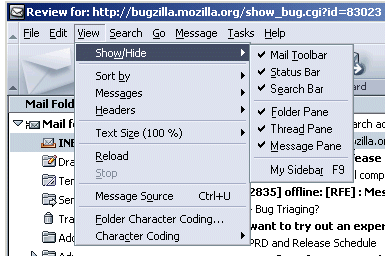
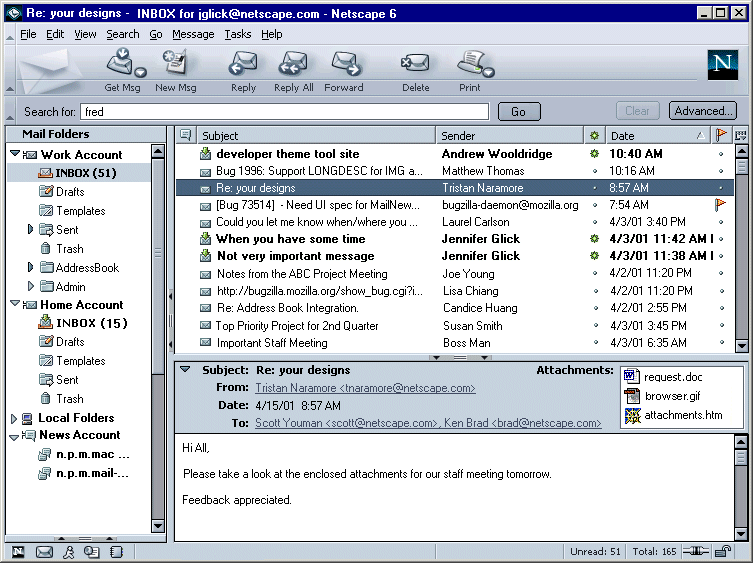
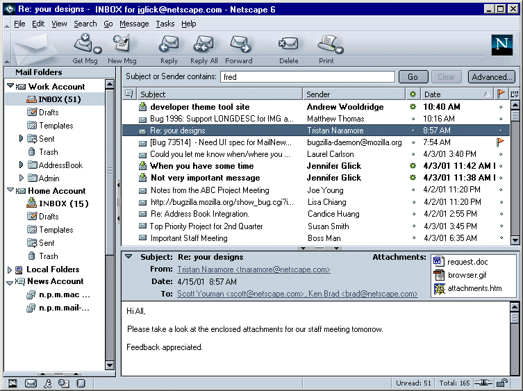
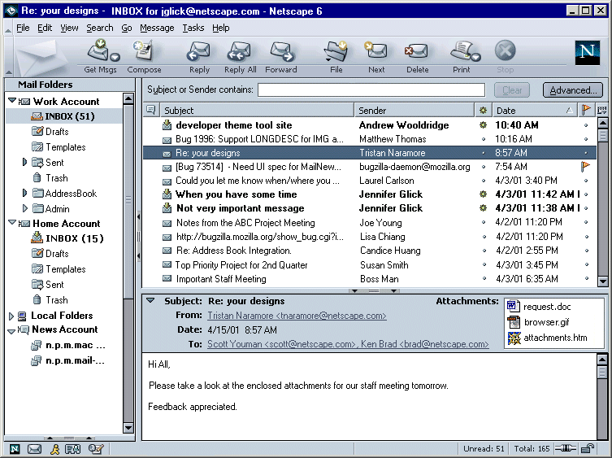
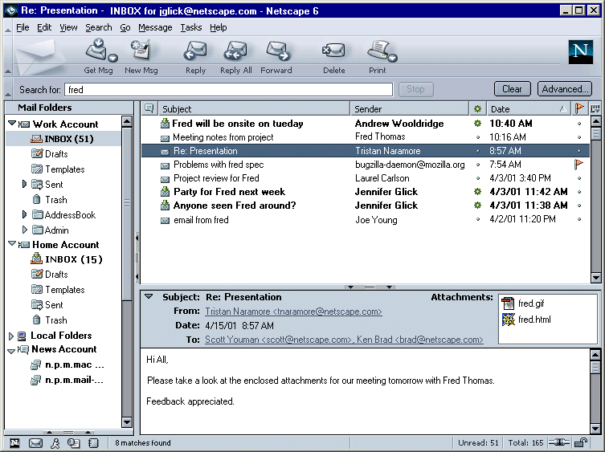

|
MachV/Mozilla: Mail & News |
UI Specification
|
|
Quick Search in Three Pane |
Last Modification: |
|
Author: Jennifer Glick |
Status: Draft Proposal |
||||||||||||
|
Quicklinks: |
Feature Team
|
Bug 63573 - RFE: have a "search engine like" interface for searching mail news.
Provide a method for users to perform a basic and easily accessible search in Three Pane Mail and News.
Select "Quick Search Bar" from the View: Show/Hide menu.

A Search Bar below the main toolbar opens.
Users who search a lot can leave this toolbar open if they prefer. The default is closed. Mail should remember how the user last left the toolbar (open vs. close vs. collapsed).

The user types the search criteria into the text field and clicks the "Go" button or presses Enter/Return on the keyboard to begin the search.
Based on what is typed in the search text area, a "contains" search on "subject", "sender" (and "body"?) is performed. Only the folder that is selected in the Left Folder Pane is searched. Users can also type in the +, -, or "" notations and the search will do the right thing and construct the search appropriately. For example:
While the search is in progress, the "Go" button changes to "Stop". The progress of the search is displayed in the status bar. If the cursor is over the window, a busy cursor is displayed.
Clicking on the "Advanced..." button opens the full "Search Messages" dialog.
Buttons:

As user types in field (after X amount of keyboard pause), the thread pane is updated to reflect matching items.

The results of the search are displayed in the Thread Pane. The number of matches found are displayed in the status bar.

Once a search is complete, the "Clear" button becomes enabled. Clicking the "Clear" button will clear the search field and the search results from the Thread Pane. The Thread Pane repopulates with the full contents of the folder selected in the left Folder Pane. Note: Clicking on any folder, newsgroup or account in the left Folder pane should also clear the search field and the Thread Pane. Once a search has been cleared, the "Clear" button is again disabled.
Users are able to drag and drop results of the search to other folders. Just like drag and drop in the Three Pane Mail, a Move is preformed. Accelerator plus drag and drop is a copy. When drag and dropping newsgroup messages, a copy is always performed.
If no matching results were found, the text, "No matches found." is displayed in the Thread Pane as well Status bar. The Message pane, if open, is empty.
The "Clear" button can be clicked to return to the previous view, or selecting a folder, newsgroup or account in the left Folder pane will refresh the contents of the Thread pane and clear the search text field.